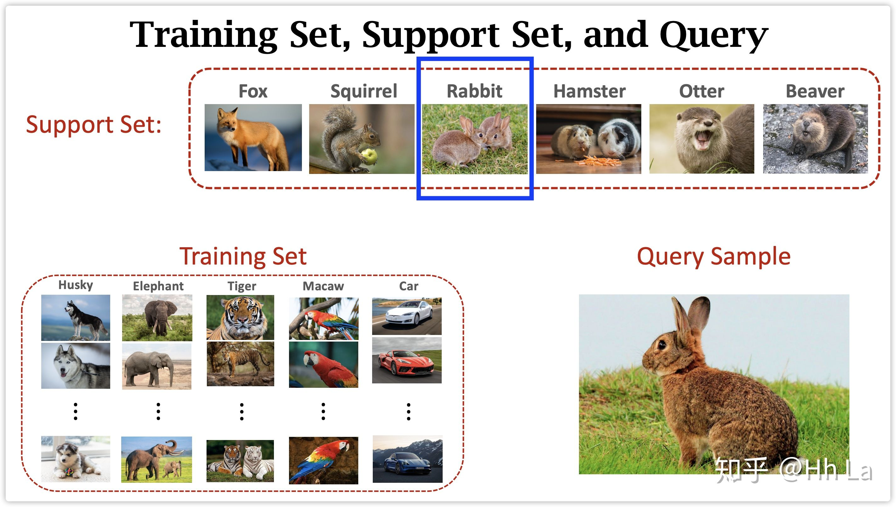
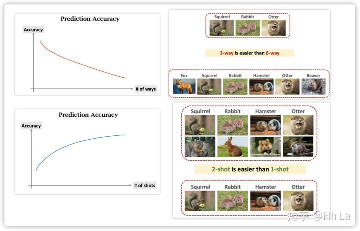

definition
Few-shot classification aims to recognize unlabeled samples from unseen classes given only few labeled samples
小样本学习（few shot learning）是元学习（meta learning）的一个子类，目标是learn to learn，跟监督学习的思路很不一样：
- 【在大样本中学习】在领域1中使用大样本中学习得到距离函数，
- 【在小样本中预测】在领域2中使用该距离函数找出最接近的样本，其类别就是预测结果。
few-shot learning名字有歧义，其实并没有在小样本中学习，叫few-shot prediction会更贴切。
领域1中的样本叫training set。
领域2中的样本集叫support set，新预测的实例叫query sample
三者关系如下图：

support set有两个属性：k-way和n-shot
k-way: support set中的类别数，上图为6，
n-shot: support set中每一类的样本数，上图为1
进一步，k和n对预测准确率的影响（如下图）：
